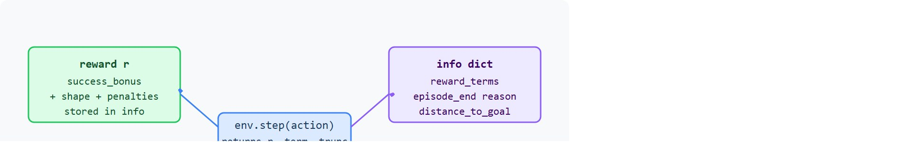

"The agent optimized what you wrote, not what you meant. The termination condition decided how long it had to find the loophole."
A Reward Designer, Revising Again
This section assumes familiarity with the Gymnasium step API and the observation and action space conventions introduced in section 10.2. The reward shaping ideas here are extended substantially in section 18.2, which covers potential-based shaping and goal-conditioned rewards, and in section 18.4, which dissects reward hacking and proxy misalignment in depth. The terminated/truncated distinction recurs throughout Part 4 alongside value function estimation and TD bootstrapping, particularly in section 14.2.
A robot arm trained to place a cup learns to slam it down hard: fast contact, reward received, task technically complete. Nobody told it "gently" because nobody wrote "gently" into the reward. This is not a curiosity from a research lab; it is typically among the central hazards of embodied RL, since physical deployment makes reward misspecification dangerous rather than merely embarrassing.
Here you will build the reward function and termination logic for a Gymnasium environment from scratch: decompose the scalar reward into auditable terms, distinguish terminated from truncated so your value estimates stay correct, and close the loopholes before the agent finds them. The same discipline applies directly when you extend to multi-agent settings with PettingZoo.
Reward design and episode endings become operational when the learning signal and the stopping reason are both explicit. A reward tells the learner what behavior is being reinforced, while terminated and truncated tell the learner why the episode stopped.
The goal is to stop treating all endings as equal. Reaching the goal, dropping the object, violating a safety boundary, and hitting a time limit require different labels in both the learning loop and the experiment report.
This environment is ready when another reader can reset it with the same seed, inspect reward terms, termination flags, truncation flags, and hidden failure incentives, reproduce the same rollout, and recover the same logged evidence.
A reward should be tied to the task construct, not to whatever sensor is easiest to measure. In a reach task, distance-to-target may help shape learning, but the success condition should still state the task boundary: target reached within tolerance, object stable, safety constraints respected.
What happens when your sparse reward fires once every 50,000 episodes and the robot arm never discovers success at all? Figure 10.3A sketches the answer for a door-opening task: a sparse terminal reward fires only on success, a dense potential-based shaping term supplies gradient throughout, and an early-termination condition cuts failed episodes short.

Gymnasium separates two ending flags because they answer different questions. terminated means the task reached its own terminal state. truncated means an outside condition, usually a time limit, stopped the episode before the task ended. The distinction shapes value learning. The TD target (temporal-difference target) is the value the critic is trained to match at each step: the immediate reward plus, unless the episode has truly ended, a discounted estimate of the value remaining. At a terminated state, future return is zero by definition, so the TD target is just the immediate reward. At a truncated state the task is still ongoing, so the correct TD target adds a bootstrapped value estimate for the final observation, that is, a prediction from the critic network of how much reward remains, used as a stand-in for the return the agent would have collected had the episode continued. Algorithms that ignore this distinction systematically underestimate value for tasks with generous time limits. The resulting policies succeed within a few hundred steps but fail to exploit longer episodes even when given them. A policy trained with merged flags typically performs worse when you give it more time: its critic learned to treat every episode boundary as a dead end, so it stops planning past that boundary. A dense potential-based shaping term compresses sample cost dramatically. A sparse-only reach task may require 50,000 episodes before the agent finds the goal even once, while a distance-shaping term typically cuts that to under 500 episodes, a 100x reduction before any hyperparameter tuning (figures typical of benchmark reach tasks as of 2024; exact numbers vary by environment and robot morphology).
So far: terminated and truncated both end an episode but require different TD targets (zero bootstrap versus value bootstrap), and dense potential-based shaping can turn a reward that is sparse enough to need tens of thousands of episodes into one that needs only hundreds, both facts that matter before the physical cost of training is considered next.
That hundredfold reduction is a software convenience in a simulator, but on hardware the same number sets the physical cost of training. For embodied agents, sample efficiency is not abstract. Every failed episode wears the joints, grippers, and cables, and a sparse reward can demand tens of thousands of failures before the arm ever finds the goal. Dense shaping supplies a learning gradient from the first step, so the policy improves each episode instead of random-walking into the goal region. Cutting required episodes from 50,000 to 500 is the difference between a viable training run and a destroyed actuator.
The potential-based shaping mechanism works by computing the difference in a scalar potential function between consecutive states: $r_{\text{shape}} = \gamma \Phi(s_t) - \Phi(s_{t-1})$. When the potential $\Phi$ is chosen as negative distance to goal, this difference is positive whenever the agent moves closer and negative when it moves away, producing a moment-to-moment progress signal. The $\gamma$ discount factor in the formula is critical: it ensures the cumulative shaped reward over any trajectory changes the value function by a constant offset, leaving the ordering of policies unchanged. Only potential-based shaping carries this optimality-preservation guarantee; arbitrary dense rewards can redirect the agent toward a proxy rather than the true goal.
A good environment writes reward terms into info during development: success bonus, distance shaping, collision penalty, control cost, and safety penalty. The scalar reward trains the policy, but the decomposed terms explain why the policy behaves as it does.
Trace $r_{\text{shape}} = \gamma \Phi(s_t) - \Phi(s_{t-1})$ with $\gamma = 0.99$ and potential $\Phi(s) = -\,\text{distance to goal}$. The agent starts 1.00 m from the goal and walks inward. Distances at steps 0 through 4: 1.00, 0.70, 0.40, 0.45, 0.05 m (note step 3 backslides). So $\Phi$ at each step is -1.00, -0.70, -0.40, -0.45, -0.05.
Step 1: $0.99 \times (-0.70) - (-1.00) = -0.693 + 1.00 = +0.307$ (moved closer, positive). Step 2: $0.99 \times (-0.40) - (-0.70) = -0.396 + 0.70 = +0.304$ (closer again). Step 3: $0.99 \times (-0.45) - (-0.40) = -0.4455 + 0.40 = -0.0455$ (backslid, penalty). Step 4: $0.99 \times (-0.05) - (-0.45) = -0.0495 + 0.45 = +0.4005$ (big progress).
Cumulative shaped reward: $0.307 + 0.304 - 0.0455 + 0.4005 = +0.966$. Check the guarantee: the telescoping sum equals $\gamma^4 \Phi(s_4) - \Phi(s_0)$ up to discounting, so the total depends only on start and end potentials, not the wiggly path through step 3. The per-step signal punished the backslide instantly, yet the trajectory-level bonus stayed a fixed offset that cannot reorder which policy is optimal.
Shaping decides how fast the agent learns, but the termination flags decide how each episode is labeled once it ends, so the next example turns from reward construction to making that labeling concrete.
Code Fragment 10.3.1 forces a time-limit truncation in CartPole-v1. The pole has not necessarily reached a terminal failure state, but the wrapper stops the episode because the external step budget is exhausted.
# Show that a time limit produces truncation, not task termination.
# Learning code should log which flag caused the episode boundary.
import gymnasium as gym
env = gym.make("CartPole-v1", max_episode_steps=3)
observation, info = env.reset(seed=5)
env.action_space.seed(5)
for step_index in range(5):
action = env.action_space.sample()
observation, reward, terminated, truncated, info = env.step(action)
print(step_index + 1, terminated, truncated)
if terminated or truncated:
break
env.close()The expected output keeps both ending flags false for the first two steps, then flips only truncated to true at step 3. That pattern means the episode stopped because the time budget expired, not because the task dynamics reached a terminal success or failure state.
max_episode_steps=3 on CartPole-v1 and prints terminated/truncated per step, showing truncated=True fire at step 3 with terminated still false.Gymnasium's TimeLimit behavior and five-value step API remove the need for custom done conventions. The shortcut only works if the experiment artifact preserves the two flags instead of recombining them into one column.
terminated for task-defined endings such as success, irreversible failure, or safety violation.truncated for external cutoffs such as time limits, evaluation budgets, or watchdog stops.info during debugging, even if the trainer only consumes the scalar reward.Input: task specification $\mathcal{T}$, state $s_t$, action $a_t$, policy $\pi_\theta$, shaping potential $\Phi(s)$, step budget $T_{\max}$
Output: scalar reward $r_t$, flags terminated and truncated, diagnostic dictionary info
terminated $= \sigma(s_t) \lor \phi(s_t)$. When terminated is true, the TD target for critic update $\nabla_\theta$ uses $r_t$ alone with no bootstrap.truncated $= (t \geq T_{\max})$ and terminated is still false. When truncated is true, the TD target adds a bootstrapped value estimate $V_\psi(s_t)$ for the final observation.info["reward_terms"] and the ending reason (success, failure, or timeout) into info["episode_end"].info["reward_terms"].values() reproduces $r_t$ exactly; flag any mismatch as a decomposition error before logging.A usable environment wrapper for this section records reward terms, termination flags, truncation flags, and hidden failure incentives, plus observation and action spaces, reset seed, info dictionary fields, and reproducible evidence artifacts.
Think of potential-based shaping like hiking with a topographic map. The map's elevation contours represent the potential function: every step uphill (toward the summit, your goal) earns you positive progress, every step downhill costs you. Crucially, the total elevation gain across any path from base camp to the summit is fixed by the terrain, regardless of which route you take. This means the map cannot trick you into preferring a longer scenic route over a direct one; it only tells you whether each individual step is moving you closer or farther. Potential-based reward shaping works the same way: the cumulative shaped bonus over any trajectory is a constant offset determined purely by where you start and end, so it nudges the agent toward the goal on each step without ever changing which complete path is best.
A common assumption is that any dense reward added to guide learning is safe because it "just helps the agent find the goal faster." This is wrong in embodied AI contexts. An arbitrary dense reward, such as a fixed bonus for moving the end-effector toward a target regardless of subsequent states, changes which policy is optimal: the agent may learn to oscillate near the goal to keep collecting incremental bonuses rather than completing the task. Only potential-based shaping, $r_{\text{shape}} = \gamma \Phi(s_t) - \Phi(s_{t-1})$, is guaranteed to preserve policy optimality because its cumulative effect over any trajectory sums to a constant offset on the value function. The correct mental model is: choose a scalar potential $\Phi(s)$ that encodes progress (such as negative distance to goal), then derive the shaping reward from its difference across transitions. This is the only dense reward construction that is provably safe to add.
The common mistake is reward hacking by proxy. In Isaac Lab sim-to-real transfer experiments with a Franka Panda arm, rewarding end-effector velocity toward a target cup produced a policy that slammed the cup at roughly 0.8 m/s at contact. The agent collected its success bonus, but the contact force peaked above 40 N and deformed the gripper fingers within 20 hardware trials. The fix added two pieces: a contact-force penalty term (capped at 10 N for acceptable grasping on the Franka's wrist force-torque sensor) and an explicit success predicate requiring the object to remain static for 0.3 s post-grasp. This pattern is called optimizing the letter, not the spirit. The more capable the optimizer, the more aggressively it exploits the gap between the reward proxy and the physical task specification. In embodied settings that exploitation causes hardware damage rather than merely a low leaderboard score.
When a training loop collapses both flags into a single done boolean, it corrupts the value bootstrap. A truncated episode should bootstrap from the estimated value of the final observation, because the task is still ongoing; a terminated episode should bootstrap from zero, because no future reward follows. Treating a time-limit cutoff as a true terminal state makes the critic underestimate long-horizon returns, which systematically biases policy updates toward short-sighted behavior. The fix is to keep both flags in the replay buffer and apply not truncated as the mask when computing TD targets, rather than using not (terminated or truncated).
In a drawer-opening task, use terminated=True when the handle passes the target displacement and the drawer remains stable. Use truncated=True when the time budget expires while the drawer is still moving. Report those counts separately because they imply different fixes.
A good embodied system makes reward design and termination visible twice: once in the design sketch and once in the replay artifact. The second view keeps the first one honest.
LLM-generated reward functions. Rather than hand-coding reward terms, recent work uses large language models to propose, critique, and iteratively refine reward code from natural-language task descriptions. Eureka (Ma et al., 2023, ICLR 2024) demonstrated that GPT-4 can generate reward functions for dexterous manipulation tasks that outperform human-authored rewards on Isaacgym benchmarks, closing the loop between task specification and reward engineering. The open problem is robustness: LLM-generated rewards often exploit the same proxy gaps (measurable stand-ins for the true task objective) as human-written ones, and detecting that drift automatically remains unsolved.
Constrained and safe reward shaping for hardware deployment. The 2024 Safe RL Benchmark from the Stanford IRIS lab (Liu et al., 2024) showed that most standard shaping heuristics violate safety constraints under distribution shift, even when they preserve policy optimality in simulation. Active work focuses on reward functions that encode safety as a hard Lagrangian constraint (a constrained-optimization formulation where a penalty weight is adjusted automatically to keep a safety limit satisfied, rather than fixed by hand) rather than a penalty term, so that constraint violation rates are bounded by design rather than tuned by coefficient. Gymnasium's terminated/truncated API is increasingly used to expose constraint violation as a first-class termination cause rather than burying it in the reward scalar.
Preference-based reward learning without a scripted oracle. Reinforcement Learning from Human Feedback (RLHF) pipelines for embodied tasks replace the reward function with a learned model trained on human or synthetic comparisons. The 2024 ICRA paper from the Berkeley Robot Learning Lab (Hejna et al., 2024, "Few-Shot Preference Learning for Human-in-the-Loop RL") showed that as few as 50 pairwise comparisons can recover a reward model that matches or exceeds dense hand-coded rewards on manipulation benchmarks, but only when termination semantics are preserved: labelers compare episode clips that respect the terminated/truncated split so that safety failures are not presented as neutral truncations.
Open problem. All three directions above share a gap: there is no agreed protocol for auditing whether a learned or LLM-generated reward function is construct-valid (a measurement-theory term for whether a proxy score actually corresponds to the concept it claims to measure), meaning whether its optimum corresponds to the intended task rather than a measurable proxy. Designing a falsifiable reward-validity test, analogous to discriminant validity in psychometrics, that can be run inside a Gymnasium wrapper before hardware deployment is an open and tractable dissertation problem.
OpenAI's Dactyl system trained a Shadow Hand to reorient a cube using a dense reward built from the angular distance between current and goal orientation, plus a large terminal bonus on success and an explicit termination when the cube was dropped. The drop-termination kept the policy from being rewarded for endlessly fumbling, while the orientation-distance shaping gave gradient on every step so the hand learned through tens of thousands of simulated reorientations rather than waiting for rare lucky successes.
Can you write one sentence each for success termination, failure termination, and external truncation in your environment? If those sentences blur together, the reward specification is not ready.
Reward design is where a simulator becomes a teacher. If the scalar reward rewards the wrong proxy, the policy will optimize that proxy with more patience than the author expects. The environment should therefore store the reward decomposition and ending cause with each episode. A reward function that is easy to measure but hard to verify is not a specification: it is an invitation for the optimizer to outpace the designer.
The graduate-level habit is to treat reward as a measurement model. The scalar is only a compressed signal. The full evidence artifact should retain the terms that explain the compression, especially when comparing methods across seeds or perturbations.
| Tool or Library | Role in the Topic | Builder Advice |
|---|---|---|
reward | Scalar learning signal | Keep it aligned with the task construct, not only easy-to-measure proxies. |
terminated | Task-defined episode ending | Use for success, failure, or safety states that belong to the environment dynamics. |
truncated | External protocol cutoff | Use for time limits, evaluation budgets, and watchdog stops. |
info | Reward and ending diagnostics | Store reward terms, failure labels, and distance-to-goal traces for debugging. |
| Evaluation report | Aggregate evidence | Publish success, failure, and truncation rates together. |
A robust implementation keeps reward computation auditable. When a Stable-Baselines3 PPO policy trained on an Isaac Lab Franka reach task plateaus, the scalar reward alone cannot tell you whether the agent is parking near the goal to harvest distance-shaping bonuses, racking up control-cost penalties from jittery joint torques, or repeatedly tripping the wrist force-torque safety predicate. The environment should emit each of those terms into info so the failure mode is reconstructible from the logged episode rather than rediscovered by re-running on hardware and risking another deformed gripper.
info.# Keep reward terms named before summing them into one scalar.
# The info dict preserves why the reward was assigned.
distance_to_goal = 0.04
collision = False
success = distance_to_goal <= 0.05 and not collision
reward_terms = {
"success_bonus": 10.0 if success else 0.0,
"distance_penalty": -distance_to_goal,
"collision_penalty": -5.0 if collision else 0.0,
}
reward = sum(reward_terms.values())
terminated = success or collision
truncated = False
info = {"reward_terms": reward_terms, "success": success}
print(round(reward, 2), terminated, truncated)
print(info)The expected output pairs a near-10 reward with terminated=True and a reward-term dictionary whose entries sum to the scalar reward. Readers should interpret that as a successful terminal transition whose score is explainable from named components rather than an opaque single number.
reward_terms dictionary (success bonus, distance penalty, collision penalty) for a single reach step, then sums it into the scalar reward and sets terminated from the same predicates.When an experiment about reward design and termination fails, avoid labeling the whole method as weak. First assign the failure to perception, state estimation, planning, control, timing, data coverage, or evaluation. Then rerun one controlled perturbation that isolates the suspected cause. This pattern turns a disappointing rollout into a reusable diagnostic asset.
Beginner (weekend): Reward decomposition logger for CartPole. Wrap CartPole-v1 in Gymnasium to emit named reward terms (balance bonus, deviation penalty, control cost) into info on every step, then plot each term over a training run using Stable-Baselines3. The key challenge is verifying that the decomposed terms sum exactly to the scalar reward passed to the trainer, and that terminated and truncated are stored as separate columns in the episode log rather than merged into a single done flag.
Intermediate (1 to 2 weeks): Contact-force-aware grasp reward in PyBullet. Build a custom Gymnasium environment around a PyBullet Franka arm that rewards successful cup placement only when post-grasp contact force stays below a threshold (read from PyBullet's getContactPoints), and terminates with a safety flag when the force exceeds a hard limit. The key challenge is tuning the potential-based shaping term (negative distance to target) so that the agent learns to approach slowly rather than slamming the object, which requires balancing the shaping magnitude against the sparse success bonus without introducing reward hacking.
Advanced (2 to 4 weeks): Sim-to-real reward transfer with Isaac Lab and LeRobot. Train a pick-and-place policy in Isaac Lab using decomposed rewards and export it via LeRobot's dataset format, then evaluate whether the reward decomposition logged in simulation predicts the failure modes observed on hardware. The key challenge is matching the termination predicates across simulation and real hardware, since Isaac Lab's physics contacts and a physical robot's force-torque sensor define success and failure differently and any mismatch silently corrupts the comparison.
Reward trains behavior, but termination semantics explain episode boundaries. Keep reward terms, task endings, and external truncations separate all the way into the result artifact.
For a simulated grasp task, write three predicates: successful grasp, dropped object, and time-limit cutoff. Then write the reward terms you would return in info to explain the scalar reward.
Goal: Measure how merging the two ending flags into one done corrupts long-horizon value learning, empirically rather than by argument.
Tools needed: Python with gymnasium and stable-baselines3. Use MountainCarContinuous-v0 or Pendulum-v1 wrapped with TimeLimit so truncations happen often.
What to do: Train two PPO agents for the same number of steps. Agent A uses the correct bootstrap mask (bootstrap on truncation, zero on termination, which Stable-Baselines3 does by default when you pass the five-value step API). For Agent B, wrap the environment so it reports terminated = terminated or truncated and always sets truncated = False, collapsing the distinction.
What to vary: Set max_episode_steps to a tight value (50) for training, then evaluate both agents at a generous budget (500 steps). Repeat across 3 seeds.
What to observe: Compare evaluation return at the generous budget and inspect the learned critic's value estimates near episode boundaries. Expect Agent B's critic to systematically underestimate long-horizon return and its policy to plateau early, the short-sighted bias predicted when a time cutoff is mislabeled as a true terminal state. This makes the abstract TD-target argument something you can see in a reward curve in under 30 minutes.
The next section should inherit the Reward design and termination interface contract and change only the next environment-design variable under study.
This paper explains why multi-agent environments need explicit agent ordering and interface discipline. It gives researchers the context behind the AEC (Agent Environment Cycle, where agents act one at a time in a defined order) and parallel API choices described in this chapter. Readers should connect this source to reward design and termination when deciding what is reusable, what is benchmark-specific, and what must be remeasured.
Brockman, G. et al. (2016). "OpenAI Gym." arXiv.
The original Gym paper explains the environment abstraction that Gymnasium modernizes. It is useful for readers comparing legacy examples with the maintained Farama stack. Readers should connect this source to reward design and termination when deciding what is reusable, what is benchmark-specific, and what must be remeasured.
Farama Foundation. "Gymnasium Documentation."
The official Gymnasium docs define the reset, step, render, terminated, truncated, and info conventions used by maintained environments. Readers implementing custom environments should use this as the API reference. Readers should connect this source to reward design and termination when deciding what is reusable, what is benchmark-specific, and what must be remeasured.
Farama Foundation. "PettingZoo Documentation."
PettingZoo defines maintained APIs for multi-agent reinforcement learning. It is directly relevant when a section moves from one embodied agent to turn-based, simultaneous, or mixed multi-agent interaction. Readers should connect this source to reward design and termination when deciding what is reusable, what is benchmark-specific, and what must be remeasured.
Stable-Baselines3 Contributors. "Stable-Baselines3 Documentation."
Stable-Baselines3 gives a practical reference for how environment spaces, vectorized environments, wrappers, and evaluation callbacks are consumed by training code. Engineers should read it when turning a custom environment into a reproducible RL experiment. Readers should connect this source to reward design and termination when deciding what is reusable, what is benchmark-specific, and what must be remeasured.